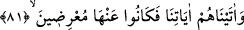
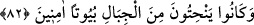

elbiseler giyer, atlara biner.’ sözüdür. Oysa adamın sâdece bir giysisi ve bir bineği
vardır.
Fakir (Bursevî) der ki: Şerîatların asıl kuralları bakımından peygamberler arasında
ihtilâf olmadığı gibi hakîkatların asıl kuralları açısından da velîler arasında herhangi
bir ihtilâf yoktur. Hattâ ihtilâfı bırakın kullandıkları ibâreler bile aynıdır. Çünkü hepsi
de tek bir pınardan almakta, Allah’ın zâtını sıfat ve fiillerini mükâşefe etmektedirler.
Velîler arasında ayrım yapan tamamını yalanlamış olur.
Bî-haber bilmez ki bunu incitmek onu incitmektir
Bu küpün suyu o ırmağın suyundandır
81. Biz onlara mucizelerimizi vermiştik; fakat onlardan yüz çevirmişlerdi.
“Biz onlara” Semûd’a “mûcizelerimizi” kendisinde ibretler bulunan deve mucizesini
“vermiştik; fakat onlardan” bu âyetlerden tamâmen “yüz çevirmişlerdi.” hattâ bunlara
karşı çıkıyorlardı. Çünkü deveye yapacaklarını yaptılar.
Kâşifî der ki: Devenin taştan çıkması, pek çok şaşılacak şeyleri içeren bir mûcizedir.
O kadar büyük bir deveydi ki onun emsâli görülmemişti. Taştan çıktığı anda kendisi gibi
büyük bir deve daha doğurdu. Sütü o kadar çoktu ki tüm Semûd kavmine yeterdi.
Devenin su içme nöbeti olan günde su kuyunun ağzına kadar gelirdi. Bir seferde kuyunun
bütün suyunu içerdi.
el-Fethu’l-karîb’de şöyle der: Sâlih (a.s.) onları durup dinlenmeden dâvet edince,
onlar da bir mûcize olarak kendilerine (kayadan) deve çıkarmasını teklif ettiler.
Böylece Allah’ın değerli kitabında deve ve Semûd’la ilgili olarak zikrettiği şeyler vukû
buldu.
Deveyi kesip etinin taksim edilmesi Çarşamba gününe rastlar.
İbnü’l-Cevzî der ki: Onlar ne deveden ibret aldılar, ne deveden aldıkları süte
şükrettiler. Nîmeti verene karşı serkeşlik ettiler, şımardılar, ilâhî cömertliği görmezden
geldiler, hiç düşünmediler. Ne zaman mûcizelerden birini görseler inkâr ettiler. Çünkü
habîs tabîat değişmez. Hakkında dalâlet takdir edilenin bu hâli, zâil olmaz.
Hâfız şöyle der:
Zemzem ve kevser suyuyla beyaz eylemek mümkün olmaz,
Baht kilimi siyah ile dokunan kimsenin.